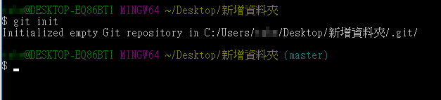
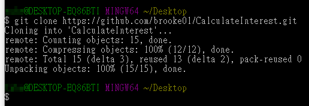
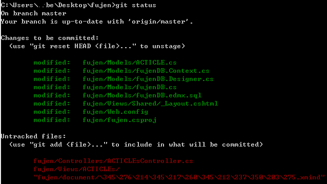
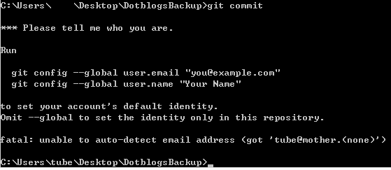
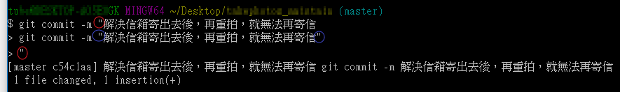
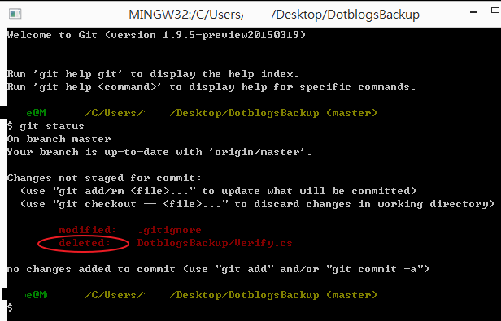
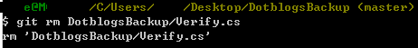

例如想把一資料夾納入git版控時可用
git init指令

想要從github把專案匯進電腦時會需要用到
git clone指令

當程式寫完想上傳時，則會使用
git status指令另看一下git的標記狀態，

發現有一些檔案沒被加入追蹤，則使用
git add .來一次加入stage狀態，
接下來則使用 git commit
(如果你是剛安裝完git第一次使用時則會出現user設定訊息)

然後會進入Vim編輯器的正常模式，再按任意字母鍵進入插入模式後，
接下來你就可以輸入註解，寫完註解後按ESC回到正常模式，
按shift+w+q跳到指令模式，再輸入w+q+enter完成註解儲存；
或是輸入「:」冒號跳到指令模式，再輸入w+q+enter完成註解儲存也可以。
有關Vim指令以下請參考
:qto quit (short for:quit):q!to quit without saving (short for:quit!):wqto write and quit (think write and quit):xto write and quit (shorter than:wq):qato quit all (short for:quitall)
另外也可不用Vim寫註解，可用git commit -m "commit message"指令，
直接寫註解也可。
如果你要利用git commit -m指令，來寫多行註解怎麼辦?
只要在第一行結尾不要輸入雙引號，就可以繼續寫下一行，
要結束時，最後再加上雙引號即可，如下圖紅圈處。
藍圈的雙引號會被忽略。

接下來再使用git push to publish your local commits，結束。
Git reset 取消上一次的操作
git reset --hard ORIG_HEAD
取消已暫存的檔案
有時候不小心將還沒修改完的檔案使用 git add 加入了 stage ，
這時候可以使用 git reset HEAD <file> 來將這支檔案取消 stage
取消修改過的檔案
若是我想完全放棄這次修改 (將檔案狀態回復到最新的一次 commit 時的狀態)，
我可以使用 git checkout -- <file> 來回復這支檔案
強制回復到上一次 commit 的版本
有時候我們想要放棄所有修改回到 commit 時的狀態，
這時候我們可以下 git reset --hard HEAD 來回復，
HEAD 參數可以加上一些變化，
例如 HEAD^ 表示目前版本的上一個版本 HEAD~2 則是再上一個，
因此你可以自由的跳回去之前的狀態。
git reset, hard 與 soft 的差異
你可能會在這邊感到疑惑，
在使用 git reset 的時候都會看到一個 soft 或是 hard 的參數，
這代表什麼樣的意義？基本上在使用 git reset 的時候，
都會把目前狀態回復到你想回復的版本，但若是不加參數的情況，
會把你做過的修改仍然保留，但是，若是加上 —soft 參數，
則會把做過的修改加入 stage ，
若是加上 hard 參數的話則是把做過的修改完全刪除，
回到那個版本原本的樣子。
git rm指令
當自己手動刪除檔案而沒移除該檔案的追蹤紀錄時遇到如下情況，

代表你要使用git rm指令來移除該檔案的追蹤紀錄，
可別以為繼續使用git add .->git commit->git push就可以成功刪除檔案與紀錄，
範例：使用git rm DotblogsBackup/Verify.cs指令即可成功移除該紀錄

這是1.9.5版的狀況，但我在2.6.x版這種形況似乎被修正了。
現在git已經發展到2.0版了，當你第一次例如使用git status指令時，
或是要把新的分支push上去時會發生如下警告訊息
---------------------------------------------------------------------------------------------------------
$ git status
On branch master
Your branch is based on 'origin/master', but the upstream is gone.
(use "git branch --unset-upstream" to fixup)
nothing to commit, working directory clean
git branch --unset-upstream
git push --set-upstream origin master
warning: push.default is unset; its implicit value is changing in
Git 2.0 from 'matching' to 'simple'. To squelch this message
and maintain the current behavior after the default changes, use:
git config --global push.default matching
To squelch this message and adopt the new behavior now, use:
git config --global push.default simple
---------------------------------------------------------------------------------------------------------
基本上看上面的訊息就可以解開了，不過我還不是很了解matching與simple的選擇啦，
似乎使用git simple 比較好，而不會push 到錯的分支，
不過Git-2.6.0版似乎又做調整了，再試試看吧。
可參考這篇文章的解說
Warning: push.default is unset; its implicit value is changing in Git 2.0
參考資料：
VIM